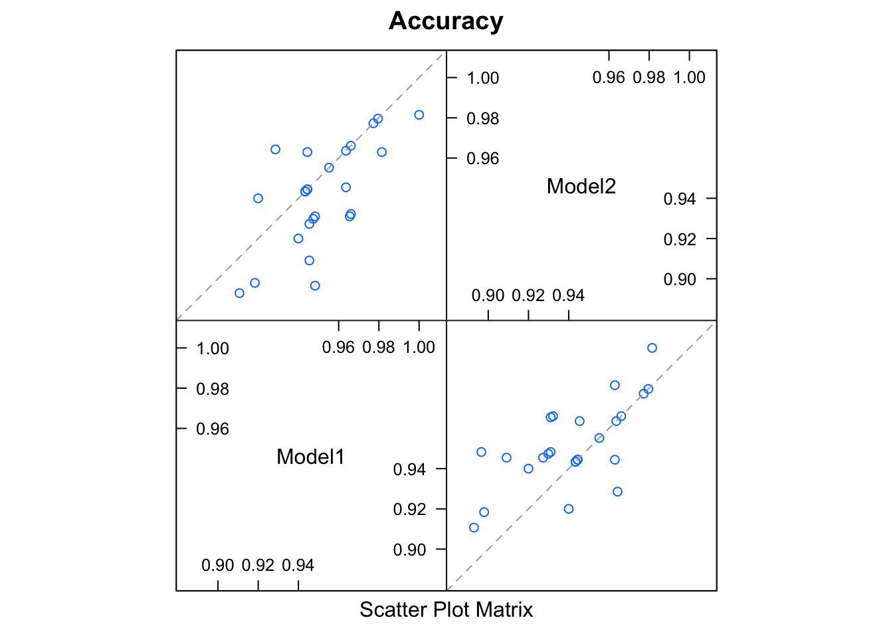

Introduction
Tim Mastny
2018-03-07
This vignette will show the basic leadr workflow. To see how leadr supports more advanced ensemble model building, check out my other vignette.
leadr is intended to be used within an R project for one dataset. Currently, the leaderboard works best placed at the project root, with any number of subdirectories to save the models.
Getting Started
I usually start with these packages.
library(purrr)
library(tidyverse)
library(caret)
library(leadr)Let’s build some models. We can easily build a list of models using purrr::map.
We can also purrr the models into our leaderboard. This time we use purrr::walk since want to update the leaderboard, but don’t care about the return value.
walk(models, board)
board()
#> # A tibble: 4 x 13
#> rank id dir model metric score public method num group index
#> <dbl> <id> <chr> <chr> <chr> <dbl> <dbl> <chr> <dbl> <dbl> <list>
#> 1 1. 2 models… rf Accura… 0.955 NA boot 25. 2. <list…
#> 2 2. 4 models… rf Accura… 0.950 NA boot 25. 4. <list…
#> 3 3. 3 models… rf Accura… 0.946 NA boot 25. 3. <list…
#> 4 4. 1 models… rf Accura… 0.942 NA boot 25. 1. <list…
#> # ... with 2 more variables: tune <list>, seeds <list>By default, board saves the models into a folder at the root of the project called models_one and returns a tibble that provides us with everything we want to know about the model.
The tibble gives us the ranking and metric score, as well as lists like tune, index, and seed that allow us to exactly recreate the model.
Groups
Of course, fitting four random forest models isn’t very realistic. The idea is that we can fit many different types of models. Let’s try a different type of model, using the same index as the first model:
first_id <- which(board()$id == 1)
control <- trainControl(index = board()$index[[first_id]])
model <- train(Species ~ ., data = iris, method = 'glmnet', trControl = control)
board(model)
#> # A tibble: 5 x 13
#> rank id dir model metric score public method num group index
#> <dbl> <id> <chr> <chr> <chr> <dbl> <dbl> <chr> <dbl> <dbl> <list>
#> 1 1. 2 models… rf Accur… 0.955 NA boot 25. 2. <list…
#> 2 2. 5 models… glmnet Accur… 0.952 NA boot 25. 1. <list…
#> 3 3. 4 models… rf Accur… 0.950 NA boot 25. 4. <list…
#> 4 4. 3 models… rf Accur… 0.946 NA boot 25. 3. <list…
#> 5 5. 1 models… rf Accur… 0.942 NA boot 25. 1. <list…
#> # ... with 2 more variables: tune <list>, seeds <list>Fitting the model on the same bootstrap or cross-validation index allows us to compare models using some caret functions. The group column indicates which models are fit on the same index, and we’ll use leadr::to_list() to covert the filtered leaderboard to a list of models.
From there, we can compare models using the resamples family of caret functions:
results <- resamples(group)
summary(results)
#>
#> Call:
#> summary.resamples(object = results)
#>
#> Models: Model1, Model2
#> Number of resamples: 25
#>
#> Accuracy
#> Min. 1st Qu. Median Mean 3rd Qu. Max. NA's
#> Model1 0.9107143 0.9433962 0.9473684 0.9516469 0.9655172 1.0000000 0
#> Model2 0.8928571 0.9298246 0.9433962 0.9416994 0.9629630 0.9814815 0
#>
#> Kappa
#> Min. 1st Qu. Median Mean 3rd Qu. Max. NA's
#> Model1 0.8638794 0.9152452 0.9197047 0.9266939 0.9478886 1.0000000 0
#> Model2 0.8365759 0.8944444 0.9152452 0.9116796 0.9444444 0.9720352 0
modelCor(results)
#> Model1 Model2
#> Model1 1.0000000 0.6676862
#> Model2 0.6676862 1.0000000
splom(results)
Peaking
leadr also has tools to help you find ranking of models as the leaderboard gets big. Let’s add a few more models:
models <- map(
rep("rf", 20),
~train(
Species ~ .,
data = iris
)
)
walk(models, board)
board()
#> # A tibble: 25 x 13
#> rank id dir model metric score public method num group index
#> <dbl> <id> <chr> <chr> <chr> <dbl> <dbl> <chr> <dbl> <dbl> <list>
#> 1 1. 25 models… rf Accur… 0.959 NA boot 25. 24. <list…
#> 2 2. 21 models… rf Accur… 0.959 NA boot 25. 20. <list…
#> 3 3. 6 models… rf Accur… 0.956 NA boot 25. 5. <list…
#> 4 4. 16 models… rf Accur… 0.955 NA boot 25. 15. <list…
#> 5 5. 2 models… rf Accur… 0.955 NA boot 25. 2. <list…
#> 6 6. 9 models… rf Accur… 0.953 NA boot 25. 8. <list…
#> 7 7. 7 models… rf Accur… 0.953 NA boot 25. 6. <list…
#> 8 8. 20 models… rf Accur… 0.953 NA boot 25. 19. <list…
#> 9 9. 17 models… rf Accur… 0.952 NA boot 25. 16. <list…
#> 10 10. 5 models… glmn… Accur… 0.952 NA boot 25. 1. <list…
#> # ... with 15 more rows, and 2 more variables: tune <list>, seeds <list>We can no longer see every model on the leaderboard. That’s where leadr::peak helps out. Let’s look at the ranking of the first model:
board() %>%
peak(1)
#> # A tibble: 10 x 13
#> rank id dir model metric score public method num group index
#> <dbl> <id> <chr> <chr> <chr> <dbl> <dbl> <chr> <dbl> <dbl> <list>
#> 1 16. 24 models… rf Accur… 0.950 NA boot 25. 23. <list…
#> 2 17. 19 models… rf Accur… 0.949 NA boot 25. 18. <list…
#> 3 18. 8 models… rf Accur… 0.949 NA boot 25. 7. <list…
#> 4 19. 11 models… rf Accur… 0.946 NA boot 25. 10. <list…
#> 5 20. 3 models… rf Accur… 0.946 NA boot 25. 3. <list…
#> 6 21. 10 models… rf Accur… 0.945 NA boot 25. 9. <list…
#> 7 22. 12 models… rf Accur… 0.944 NA boot 25. 11. <list…
#> 8 23. 1 models… rf Accur… 0.942 NA boot 25. 1. <list…
#> 9 24. 13 models… rf Accur… 0.939 NA boot 25. 12. <list…
#> 10 25. 18 models… rf Accur… 0.938 NA boot 25. 17. <list…
#> # ... with 2 more variables: tune <list>, seeds <list>Often, we want to see how the model we just ran ranks:
board() %>%
peak(at_last())
#> # A tibble: 10 x 13
#> rank id dir model metric score public method num group index
#> <dbl> <id> <chr> <chr> <chr> <dbl> <dbl> <chr> <dbl> <dbl> <list>
#> 1 1. 25 models… rf Accur… 0.959 NA boot 25. 24. <list…
#> 2 2. 21 models… rf Accur… 0.959 NA boot 25. 20. <list…
#> 3 3. 6 models… rf Accur… 0.956 NA boot 25. 5. <list…
#> 4 4. 16 models… rf Accur… 0.955 NA boot 25. 15. <list…
#> 5 5. 2 models… rf Accur… 0.955 NA boot 25. 2. <list…
#> 6 6. 9 models… rf Accur… 0.953 NA boot 25. 8. <list…
#> 7 7. 7 models… rf Accur… 0.953 NA boot 25. 6. <list…
#> 8 8. 20 models… rf Accur… 0.953 NA boot 25. 19. <list…
#> 9 9. 17 models… rf Accur… 0.952 NA boot 25. 16. <list…
#> 10 10. 5 models… glmn… Accur… 0.952 NA boot 25. 1. <list…
#> # ... with 2 more variables: tune <list>, seeds <list>leadr::peak also takes a variable number of inputs. If we want to compare the last to the first model, it will return the smallest tibble that contains both. If it is under 20 rows, it will print the entire tibble.
board() %>%
peak(at_last(), 1)
#> # A tibble: 23 x 13
#> rank id dir model metric score public method num group index
#> <dbl> <id> <chr> <chr> <chr> <dbl> <dbl> <chr> <dbl> <dbl> <list>
#> 1 1. 25 models… rf Accur… 0.959 NA boot 25. 24. <list…
#> 2 2. 21 models… rf Accur… 0.959 NA boot 25. 20. <list…
#> 3 3. 6 models… rf Accur… 0.956 NA boot 25. 5. <list…
#> 4 4. 16 models… rf Accur… 0.955 NA boot 25. 15. <list…
#> 5 5. 2 models… rf Accur… 0.955 NA boot 25. 2. <list…
#> 6 6. 9 models… rf Accur… 0.953 NA boot 25. 8. <list…
#> 7 7. 7 models… rf Accur… 0.953 NA boot 25. 6. <list…
#> 8 8. 20 models… rf Accur… 0.953 NA boot 25. 19. <list…
#> 9 9. 17 models… rf Accur… 0.952 NA boot 25. 16. <list…
#> 10 10. 5 models… glmn… Accur… 0.952 NA boot 25. 1. <list…
#> # ... with 13 more rows, and 2 more variables: tune <list>, seeds <list>Thanks to pillar and crayon, leadr::peak also has special printing capabilities when used in a supported console. Here is an example of peak in the RStudio console. Notice that it highlights the peaked models in the output.